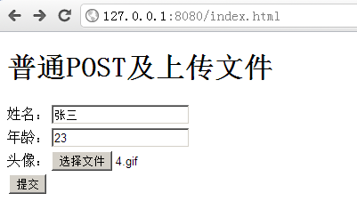

使用POST提交数据与上传文件
一般方式
示例代码：
exports.post = function (req, res) {
// 监听post complete事件
req.on('post complete', function () {
// POST参数
console.log('姓名：' + req.post.name);
console.log('年龄：' + req.post.age);
// 上传文件
if (req.file) {
console.log('头像文件：' + req.file.face.path);
// 输出该头像
res.sendFile(req.file.face.path);
}
else {
res.send('没有上传头像！');
}
});
// 监听post error事件
req.on('post error', function (err) {
console.error('解析POST数据时出错：' + err.stack);
res.sendError(500, err);
});
}
说明：
通过
exports.post来注册处理POST请求的函数；在处理POST或PUT请求时，需要监听两个事件：
post complete 客户端发送数据完毕；
post error 客户端在发送数据过程中出错；
请求的POST参数通过
req.post来获取；如果有上传文件，则
req.file为对象类型（如果没有上传文件时为null）
上例中的代码运行效果如下：
填写表单

提交

提交JSON格式的数据
QuickWeb默认支持解析Content-Type为application/json格式的数据。一般用于提供REST风格的API。
示例代码（服务器端）：
exports.path = '/json';
exports.post = function (req, res) {
// 监听post complete事件
req.on('post complete', function () {
// POST参数
console.log('姓名：' + req.post.name);
console.log('年龄：' + req.post.age);
// 返回JSON数据
res.sendJSON({msg: 'hello, ' + req.post.name});
});
// 监听post error事件
req.on('post error', function (err) {
console.error('解析POST数据时出错：' + err.stack);
res.sendError(500, err);
});
}
示例代码（客户端）：
var http = require('http');
// 发送请求
http.request({
host: '127.0.0.1',
port: 8080,
path: '/json',
method: 'POST',
headers: {
'Content-Type': 'application/json'
}
},function (res) {
var data = '';
res.on('data', function (chunk) {
data += chunk;
});
res.on('end', function () {
// 解析服务器返回的数据
var json = JSON.parse(data);
console.log('服务器返回信息：' + json.msg);
});
// 将数据转换为JSON字符串被发送
}).end(JSON.stringify({name: '张三', age: 23}));
运行结果如下：

octet-stream格式的数据流
对于Content-Type为application/octet-stream的POST或PUT请求，QuickWeb会将提交的
数据当作一个上传的文件，文件名为stream，可通过req.file.stream来获取。
以下为一个利用FileUploader上传组件来进行批量上传文件的例子：
exports.path = '/upload';
exports.post = function (req, res) {
// 监听post complete事件
req.on('post complete', function () {
if (!req.file || !req.file.stream) {
console.log('没有上传文件！');
res.sendJSON({error: '没有上传文件！'});
}
else {
console.log('上传文件已保存到：' + req.file.stream.path);
res.send({success: '上传文件已保存到：' + req.file.stream.path});
}
});
// 监听post error事件
req.on('post error', function (err) {
console.error('解析POST数据时出错：' + err.stack);
res.sendError(500, err);
});
}
运行结果：
选择文件页面

运行结果